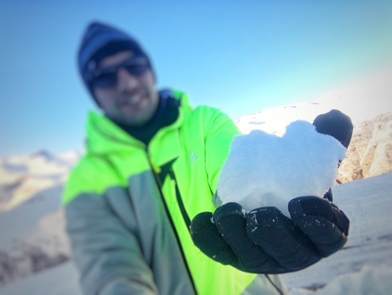

Quem sou eu?
atualizado em agosto/2025
Vida profissional
No ano de 2012, após concluir a graduação em Ciências Jurídicas e Sociais pela Faculdade Ritter dos Reis, em Porto Alegre/RS, e aprovação no Exame da Ordem dos Advogados, atuei como Advogado até o ano de 2016 quando então, após aprovação em concurso, ingressei na Policia Militar do Estado de Santa Catarina...
Fui então policial militar até o ano de 2022 quando, juntamente com a minha esposa, imigramos para a Europa. Inicialmente moramos na Itália, durante o processo de reconhecimento da Cidadania Italiana da minha companheira, e já no final do ano de 2022 nos mudamos para a Alemanha aonde trabalhamos por quase 3 anos em uma Sorveteria Italiana na cidade de Erlangen. Em junho do ano de 2025 retornamos então para a Itália e estamos procurando a inserção no mercado de trabalho.
Leia mais


Vida pessoal
Sou natural de Porto Alegre/RS, nascido no ano de 1989, sempre fui uma pessoa com gosto para esportes e jogos, inclusive os digitais! O contato desde a infância com computadores sempre manteve em mim o interesse por tecnologia e a internet...
Em 2025, após o incentivo de pessoas próximas, dei início a um sonho antigo que seria estudar com maior profundidade o extenso mundo da Programação. Estou cursando, pela Uninter, o curso de Analise e Desenvolvimento de Sistemas.
Leia mais